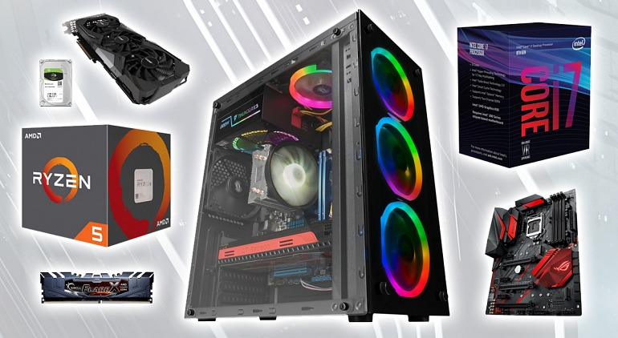

Ya sea porque te vas a comprar un ordenador o porque te vas a montar uno tú solo, tendrás que prestar especial atención a los componentes del hardware. En principio, lo normal es comprarte el ordenador ya montado y con sistema operativo. Pero la verdad es que puede resultar mucho más barato fabricarse un ordenador en tu casa comprando las piezas sueltas y tampoco es tan complicado de montar. Así que tú decides. En caso de que vayas a montarlo por ti mismo, tendrás que tener cuidado con la placa base que vayas a comprar: debe ser lo suficientemente buena y compatible con el resto de dispositivos. En cualquier caso, si quieres tener un potente pc gaming, tienes que prestar atención a los siguientes elementos:
